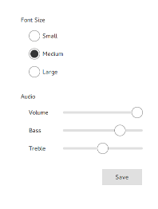
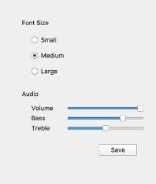
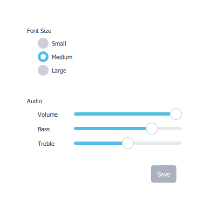
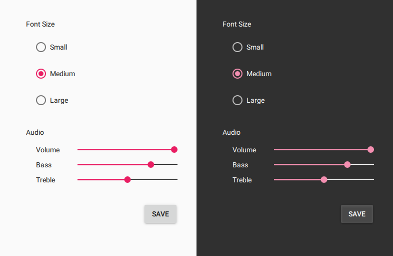
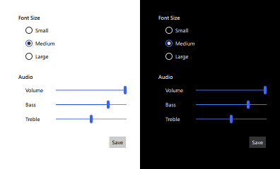

Styling Qt Quick Controls
Available Styles
Qt Quick Controls comes with a selection of styles.
Default Style

The Default Style is a simple and light-weight all-round style that offers the maximum performance for Qt Quick Controls.
Fusion Style

The Fusion Style is a platform-agnostic style that offers a desktop-oriented look'n'feel for Qt Quick Controls.
Imagine Style

The Imagine Style is based on image assets. The style comes with a default set of images which can easily be changed by providing a directory with images using a predefined naming convention.
Material Style

The Material Style offers an appealing design based on the Google Material Design Guidelines, but requires more system resources than the Default style.
Universal Style

The Universal Style offers an appealing design based on the Microsoft Universal Design Guidelines, but requires more system resources than the Default style.
Using Styles in Qt Quick Controls
In order to run an application with a specific style, either configure the style using QQuickStyle in C++, pass a command line argument, or set an environment variable. Alternatively, the preferred style and style-specific attributes can be specified in a configuration file.
The priority of these approaches follows the order they are listed below, from highest to lowest. That is, using QQuickStyle to set the style will always take priority over using the command line argument, for example.
Using QQuickStyle in C++
QQuickStyle provides C++ API for configuring a specific style. The following example runs a Qt Quick Controls application with the Material style:
QQuickStyle::setStyle("Material");
See the detailed description of QQuickStyle for more details.
Command line argument
Passing a -style command line argument is the convenient way to test different styles. It takes precedence over the other methods listed below. The following example runs a Qt Quick Controls application with the Material style:
./app -style material
Environment variable
Setting the QT_QUICK_CONTROLS_STYLE environment variable can be used to set a system-wide style preference. It takes precedence over the configuration file mentioned below. The following example runs a Qt Quick Controls application with the Universal style:
QT_QUICK_CONTROLS_STYLE=universal ./app
See Supported Environment Variables in Qt Quick Controls for the full list of supported environment variables.
Configuration file
Qt Quick Controls support a special configuration file, :/qtquickcontrols2.conf, that is built into an application's resources.
The configuration file can specify the preferred style (may be overridden by either of the methods described earlier) and certain style-specific attributes. The following example specifies that the preferred style is the Material style.
[Controls] Style=Material
See Qt Quick Controls Configuration File for more details about the configuration file.